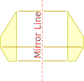
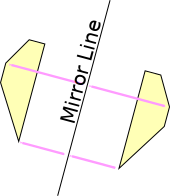
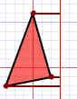
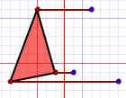
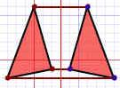
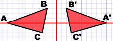
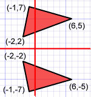
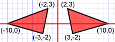

Reflection
Reflections are everywhere ... in mirrors, glass, and here in a lake.
... what do you notice ?

Every point is the same distance from the central line !
... and ...
The reflection has the same size as the original image
The central line is called the Mirror Line ...

 |
Can A Mirror Line Be Vertical?Yes. |
In fact Mirror Lines can be in any direction. |
||
|  |  | |
A reflection is a flip over a line
You can try reflecting some shapes about different mirror lines here:
How Do I Do It Myself?
Just approach it step-by-step. For each corner of the shape:
| 1. Measure from the point to the mirror line (must hit the mirror line at a right angle) | 2. Measure the same distance again on the other side and place a dot. | 3. Then connect the new dots up! |
|  |  |  |
Labels

It is common to label each corner with letters, and to use a little dash (called a Prime) to mark each corner of the reflected image.
Here the original is ABC and the reflected image is A'B'C'
Some Tricks

X-Axis
When the mirror line is the x-axiswe change each (x,y) into (x,−y)

Y-Axis
When the mirror line is the y-axis
we change each (x,y) into (−x,y)
Fold the Paper
And when all else fails, just fold the sheet of paper along the mirror line and then hold it up to the light !